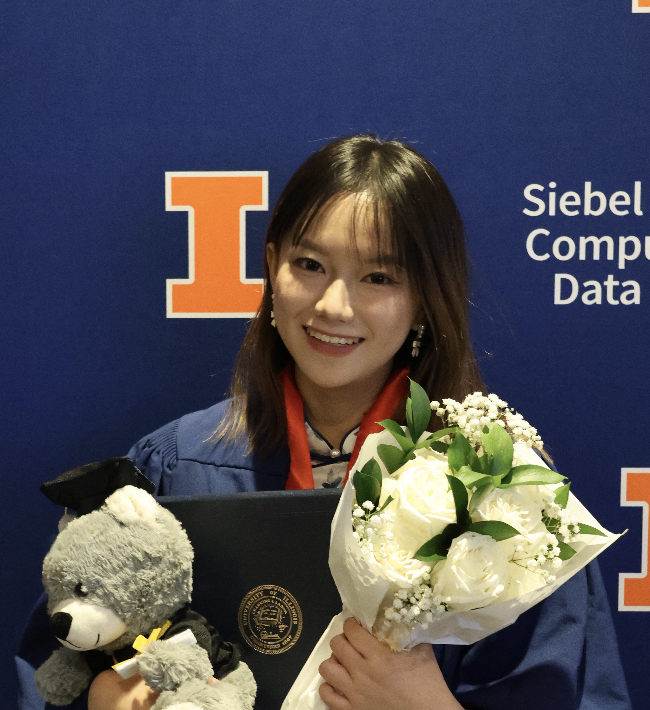

Same household, different choices: variation in health behaviors related to respiratory viruses in Illinois
Soren L. Larsen*, Junke Yang*, Erin M. Haslett, Alyssa Anastasi, Annika Venegas, Lydia Schieleit, Ayesha S. Mahmud, and Pamela P. Martinez
Biostatistics · Statistical machine learning
I’m a second-year PhD student in Biostatistics at The Ohio State University. I develop statistical models and machine learning methods for biological and health applications.
I earned my bachelor’s degree in Statistics, with minors in Computer Science and Mathematics, from the University of Illinois Urbana-Champaign. As an undergraduate, I worked with Pamela Martinez, Kelly Findley, and Soren Larsen.

Selected work
Grouped by the questions and methods that connect the work.
Soren L. Larsen*, Junke Yang*, Erin M. Haslett, Alyssa Anastasi, Annika Venegas, Lydia Schieleit, Ayesha S. Mahmud, and Pamela P. Martinez
Huaning Liu, Junke Yang, Soren L. Larsen, Pamela P. Martinez, and Gökçe Dayanıklı
Soren L. Larsen, Junke Yang*, Huibin Lv*, Yang Wei Huan, Qiwen Teo, Tossapol Pholcharee, Ruipeng Lei, Akshita B. Gopal, Evan K. Shao, Logan Talmage, Chris K. P. Mok, Saki Takahashi, Alicia N. M. Kraay, Nicholas C. Wu, and Pamela P. Martinez
Yingtie Lei, Fangxun Liu, Baicheng Wu, Colin Lee, Ziheng Zhang, Junke Yang, Zhiyuan Tao, Xuyan Huang, Shuheng Wang, William Koran, Kyle Park, Elijah H. Buckwalter, Cheng-Hsuan Chiang, Tejas Naik, Daniel Yi, and Wei-Lun Chao
Fangxun Liu, S. M. Rayeed, Samuel Stevens, Alyson East, Cheng-Hsuan Chiang, Colin Lee, Daniel Yi, Junke Yang, Tejas Naik, Ziyi Wang, Connor Kilrain, Elijah H. Buckwalter, Jiacheng Hou, Saul Ibaven Bueno, Shuheng Wang, Xinyue Ma, Yifan Liu, Zhiyuan Tao, Ziheng Zhang, Sydne Record, Charles V. Stewart, and Wei-Lun Chao
Kelly Findley, Mehmet Aktas, and Junke Yang
* Equal contribution. For the most current record, see Google Scholar.